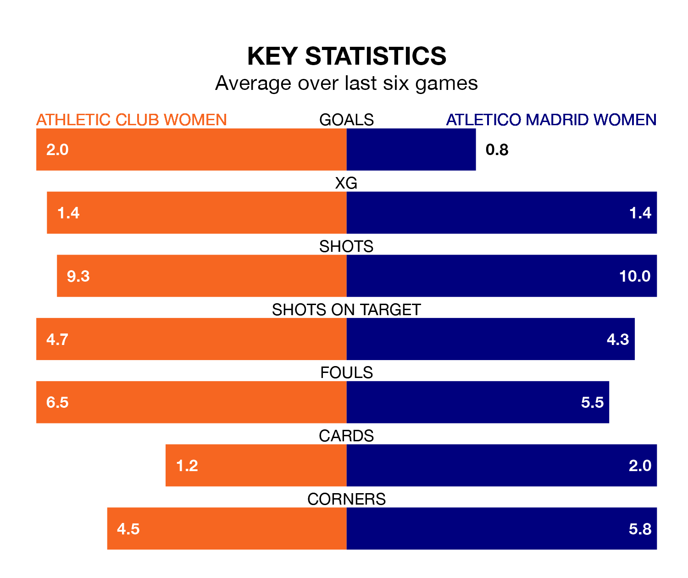

Two of Liga F's meanest defences go head-to-head at Instalaciones de Lezama Campo 1 on Sunday, when Atletico Madrid Women visit Athletic Club Women.
Only one side – Barcelona Women – has conceded fewer goals than Atletico Madrid to date: the away side have let in just 16 goals in 22 games.
Athletic Club have conceded 25 goals in 22 games, giving them the joint-fourth tightest back line so far this season.
Key to Atletico Madrid's home form has been María Dolores Gallardo Nuñez, who has allowed 0.79 goals past him per 90 minutes, compared to 0.88 for Adriana Nanclares Romero in the opposite net.
Athletic Club are in exceptional form in Liga F, with six wins and no losses from their last six games.
With three wins and two draws over that period, Atletico Madrid's form is much worse – they have taken 11 points from 18, compared to the hosts' 18.
In the last 10 years, Athletic Club and Atletico Madrid have played each other on 18 occasions. Athletic Club won three of them, Atletico Madrid 10, and they drew five times.
On average, Athletic Club scored 1.1 goals and Atletico Madrid 2.3 in those matches.
Their last meeting was on September 16, when Atletico Madrid won 3-0 at home.
The away side are fourth in the table after 22 games, of which they have won 12 and drawn six, earning 42 points.
Athletic Club are two places behind Atletico Madrid in sixth, with 12 wins and two draws putting them on 38 points.
In Sheila Guijarro Gómez, Atletico Madrid have one of the league's most on-form strikers so far this season. She has notched 12 goals in 21 appearances, to sit fourth in the scoring charts.
Athletic Club's top scorers, with five goals each, are Patricia Zugasti Osés and Ane Azcona Fuente.
Athletic Club's last match was on March 31, a 4-1 win against Levante Las Planas, with Zugasti Osés (three) and Azcona Fuente getting the goals for Athletic Club.
Atletico Madrid beat Valencia Women 1-0 last time out, on March 30, with Rasheedat Ajibade on the scoresheet.
Updated: 16:41 (UTC), 04/04/24